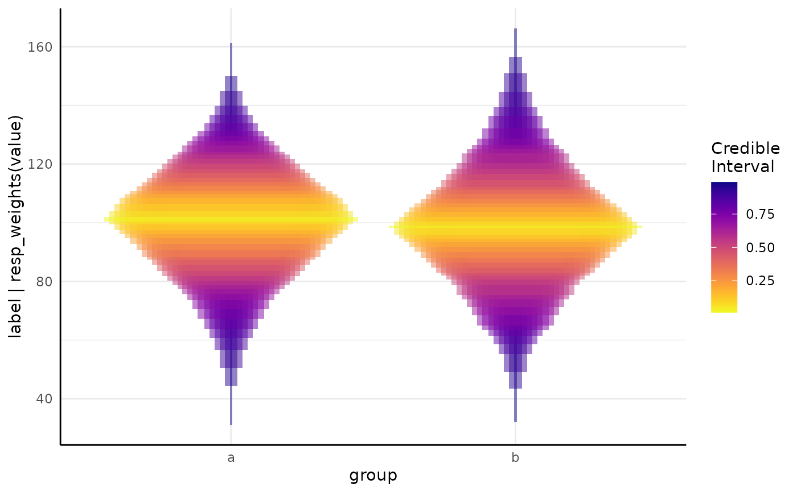

This function provides a simplified interface to modeling multi-value traits using growthSS. Output from this should be passed to fitGrowth to fit the specified model.
Usage
mvSS(
model = "linear",
form,
sigma = NULL,
df,
start = NULL,
pars = NULL,
type = "brms",
tau = 0.5,
hierarchy = NULL,
spectral_index = c("none", "ari", "ci_rededge", "cri550", "cri700", "egi", "evi",
"gdvi", "mari", "mcari", "mtci", "ndre", "ndvi", "pri", "psnd_chlorophyll_a",
"psnd_chlorophyll_b", "psnd_caroteniods", "psri", "pssr_chlorophyll_a",
"pssr_chlorophyll_b", "pssr_caroteniods", "rgri", "rvsi", "savi", "sipi", "sr",
"vari", "vi_green", "wi", "fvfm", "fqfm")
)Arguments
- model
A model specification as in growthSS.
- form
A formula similar to
label | value ~ time + id/groupwhere label is a column of histogram bins, value is the counts within those bins, time is an optional time variable, id identifies an individual, and group contains the treatment groups. If the time variable is not included then the individual variable should also not be included.- sigma
Distributional models passed to growthSS.
- df
Data passed to growthSS.
- start
Starting values or priors, passed to growthSS.
- pars
Parameters to vary, passed to growthSS.
- type
Backend to use, passed to growthSS.
- tau
Quantile to model, passed to growthSS.
- hierarchy
Formulae describing any hierarchical models, see growthSS.
- spectral_index
Optionally, a spectral index from those calculated by PlantCV. If this is given then the appropriate truncation and model family (if applicable) will be included for the index you are using without you having to write it in the formula.
Value
A named list of plots showing prior distributions that growthSS would use,
optionally with a plot of simulated growth curves using draws from those priors.
See also
fitGrowth for fitting the model specified by this list.
Examples
set.seed(123)
mv_df <- mvSim(dists = list(rnorm = list(mean = 100, sd = 30)), wide = FALSE)
mv_df$group <- rep(c("a", "b"), times = 900)
mv_df <- mv_df[mv_df$value > 0, ]
mv_df$label <- as.numeric(gsub("sim_", "", mv_df$variable))
ss1 <- mvSS(
model = "linear", form = label | value ~ group, df = mv_df,
start = list("A" = 5), type = "brms", spectral_index = "none"
)
# \donttest{
mod1 <- fitGrowth(ss1, backend = "cmdstanr", iter = 1000, chains = 1, cores = 1)
#> Start sampling
#> Running MCMC with 1 chain...
#>
#> Chain 1 Iteration: 1 / 1000 [ 0%] (Warmup)
#> Chain 1 Informational Message: The current Metropolis proposal is about to be rejected because of the following issue:
#> Chain 1 Exception: student_t_lpdf: Scale parameter is inf, but must be positive finite! (in '/tmp/RtmplFBSkp/model-214b53532f50.stan', line 76, column 6 to column 71)
#> Chain 1 If this warning occurs sporadically, such as for highly constrained variable types like covariance matrices, then the sampler is fine,
#> Chain 1 but if this warning occurs often then your model may be either severely ill-conditioned or misspecified.
#> Chain 1
#> Chain 1 Informational Message: The current Metropolis proposal is about to be rejected because of the following issue:
#> Chain 1 Exception: student_t_lpdf: Scale parameter is inf, but must be positive finite! (in '/tmp/RtmplFBSkp/model-214b53532f50.stan', line 76, column 6 to column 71)
#> Chain 1 If this warning occurs sporadically, such as for highly constrained variable types like covariance matrices, then the sampler is fine,
#> Chain 1 but if this warning occurs often then your model may be either severely ill-conditioned or misspecified.
#> Chain 1
#> Chain 1 Informational Message: The current Metropolis proposal is about to be rejected because of the following issue:
#> Chain 1 Exception: student_t_lpdf: Scale parameter is inf, but must be positive finite! (in '/tmp/RtmplFBSkp/model-214b53532f50.stan', line 76, column 6 to column 71)
#> Chain 1 If this warning occurs sporadically, such as for highly constrained variable types like covariance matrices, then the sampler is fine,
#> Chain 1 but if this warning occurs often then your model may be either severely ill-conditioned or misspecified.
#> Chain 1
#> Chain 1 Informational Message: The current Metropolis proposal is about to be rejected because of the following issue:
#> Chain 1 Exception: gamma_lpdf: Random variable is inf, but must be positive finite! (in '/tmp/RtmplFBSkp/model-214b53532f50.stan', line 60, column 2 to line 61, column 34)
#> Chain 1 If this warning occurs sporadically, such as for highly constrained variable types like covariance matrices, then the sampler is fine,
#> Chain 1 but if this warning occurs often then your model may be either severely ill-conditioned or misspecified.
#> Chain 1
#> Chain 1 Informational Message: The current Metropolis proposal is about to be rejected because of the following issue:
#> Chain 1 Exception: student_t_lpdf: Scale parameter is inf, but must be positive finite! (in '/tmp/RtmplFBSkp/model-214b53532f50.stan', line 76, column 6 to column 71)
#> Chain 1 If this warning occurs sporadically, such as for highly constrained variable types like covariance matrices, then the sampler is fine,
#> Chain 1 but if this warning occurs often then your model may be either severely ill-conditioned or misspecified.
#> Chain 1
#> Chain 1 Iteration: 100 / 1000 [ 10%] (Warmup)
#> Chain 1 Iteration: 200 / 1000 [ 20%] (Warmup)
#> Chain 1 Iteration: 300 / 1000 [ 30%] (Warmup)
#> Chain 1 Iteration: 400 / 1000 [ 40%] (Warmup)
#> Chain 1 Iteration: 500 / 1000 [ 50%] (Warmup)
#> Chain 1 Iteration: 501 / 1000 [ 50%] (Sampling)
#> Chain 1 Iteration: 600 / 1000 [ 60%] (Sampling)
#> Chain 1 Iteration: 700 / 1000 [ 70%] (Sampling)
#> Chain 1 Iteration: 800 / 1000 [ 80%] (Sampling)
#> Chain 1 Iteration: 900 / 1000 [ 90%] (Sampling)
#> Chain 1 Iteration: 1000 / 1000 [100%] (Sampling)
#> Chain 1 finished in 1.6 seconds.
growthPlot(mod1, ss1$pcvrForm, df = ss1$df)

# }
# when the model is longitudinal the same model is possible with growthSS
m1 <- mvSim(
dists = list(
rnorm = list(mean = 100, sd = 30),
rnorm = list(mean = 110, sd = 25),
rnorm = list(mean = 120, sd = 20),
rnorm = list(mean = 135, sd = 15)
),
wide = FALSE, n = 6
)
m1$time <- rep(1:4, times = 6 * 180)
m2 <- mvSim(
dists = list(
rnorm = list(mean = 85, sd = 25),
rnorm = list(mean = 95, sd = 20),
rnorm = list(mean = 105, sd = 15),
rnorm = list(mean = 110, sd = 15)
),
wide = FALSE, n = 6
)
m2$time <- rep(1:4, times = 6 * 180)
mv_df2 <- rbind(m1, m2)
mv_df2$group <- rep(c("a", "b"), each = 4320)
mv_df2 <- mv_df2[mv_df2$value > 0, ]
mv_df2$label <- as.numeric(gsub("sim_", "", mv_df2$variable))
ss_mv0 <- mvSS(
model = "linear", form = label | value ~ group, df = mv_df2,
start = list("A" = 50), type = "brms", spectral_index = "ci_rededge"
)
ss_mv0 # non longitudinal model setup
#> linear brms skew_normal model:
#>
#> pcvr formula variables:
#> Outcome: label | resp_weights(value) + trunc(lb = -1, ub = Inf)
#> Group: group
#>
#> Model Formula:
#> label | resp_weights(value) + trunc(lb = -1, ub = Inf) ~ A
#> A ~ 0 + group
#>
#> Data:
#> id group variable value time label
#> 1 1 a sim_1 1 1 1
#> 3 3 a sim_1 2 3 1
#> 4 4 a sim_1 1 4 1
#> ...
#> (5117 rows)
ss_mv1 <- mvSS(
model = "linear", form = label | value ~ time | group, df = mv_df2,
start = list("A" = 50), type = "brms", spectral_index = "ci_rededge"
)
ss_mv1
#> skew_normal: linear brms skew_normal model:
#>
#> pcvr formula variables:
#> Outcome: label | resp_weights(value) + trunc(lb = -1, ub = Inf)
#> X: time
#> Group: group
#>
#> Model Formula:
#> label | resp_weights(value) + trunc(lb = -1, ub = Inf) ~ A * time
#> sigma ~ 0 + group
#> alpha ~ 0 + group
#> A ~ 0 + group
#>
#> Data:
#> id group variable value time label
#> 1 1 a sim_1 1 1 1
#> 3 3 a sim_1 2 3 1
#> 4 4 a sim_1 1 4 1
#> ...
#> (5117 rows)
ss_mv2 <- growthSS(
model = "skew_normal: linear",
form = label | resp_weights(value) + trunc(lb = -1, ub = Inf) ~ time | group,
df = mv_df2, start = list("A" = 50)
)
ss_mv2
#> skew_normal: linear brms skew_normal model:
#>
#> pcvr formula variables:
#> Outcome: label | resp_weights(value) + trunc(lb = -1, ub = Inf)
#> X: time
#> Group: group
#>
#> Model Formula:
#> label | resp_weights(value) + trunc(lb = -1, ub = Inf) ~ A * time
#> sigma ~ 0 + group
#> alpha ~ 0 + group
#> A ~ 0 + group
#>
#> Data:
#> id group variable value time label
#> 1 1 a sim_1 1 1 1
#> 3 3 a sim_1 2 3 1
#> 4 4 a sim_1 1 4 1
#> ...
#> (5117 rows)
# ignoring environments and other such details these are identical except for the
# function call.
unlist(lapply(names(ss_mv1), function(nm) {
if (!identical(ss_mv1[[nm]], ss_mv2[[nm]],
ignore.environment = TRUE,
ignore.srcref = TRUE
)) {
if (!identical(as.character(ss_mv1[[nm]]), as.character(ss_mv2[[nm]]))) {
nm
}
}
}))
#> [1] "call"
# \donttest{
if (rlang::is_installed("mnormt")) {
m2 <- fitGrowth(ss_mv1, backend = "cmdstanr", iter = 1000, chains = 1, cores = 1)
growthPlot(m2, ss_mv1$pcvrForm, df = ss_mv1$df)
}
# }